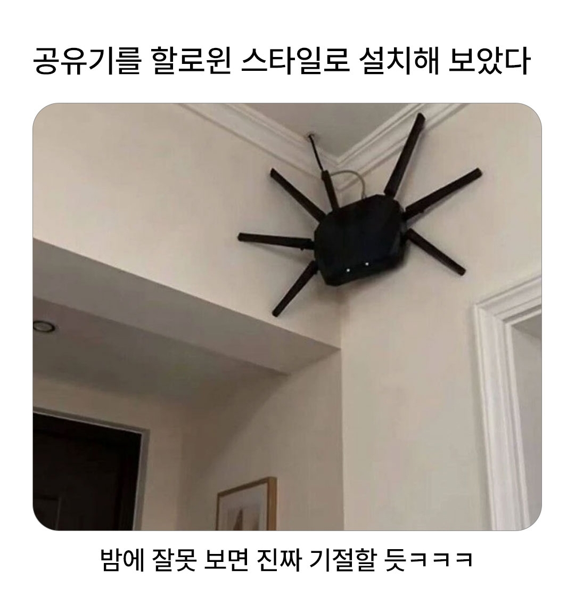

할로윈스타일로 공유기 설치.jpg
댓글
조금 귀엽게 생겼는걸
어느날 다른 벽에도 같은 형체가 보이는 거임
공유기 두개 달았구나 집 넓은가보네
장소가 호주인 것이다
농발 공유기
타닥 탁탁탁 하고 움직이는거지
"어? 누가 공유기 위치 옮겼어?"
분명 철거했었는데..?
좀 비싼건 진짜 안테나 준나개 많더라
농발거미?

조금 귀엽게 생겼는걸
어느날 다른 벽에도 같은 형체가 보이는 거임
공유기 두개 달았구나 집 넓은가보네
장소가 호주인 것이다
농발 공유기
타닥 탁탁탁 하고 움직이는거지
"어? 누가 공유기 위치 옮겼어?"
분명 철거했었는데..?
좀 비싼건 진짜 안테나 준나개 많더라
농발거미?
눈도 뜨고 있네